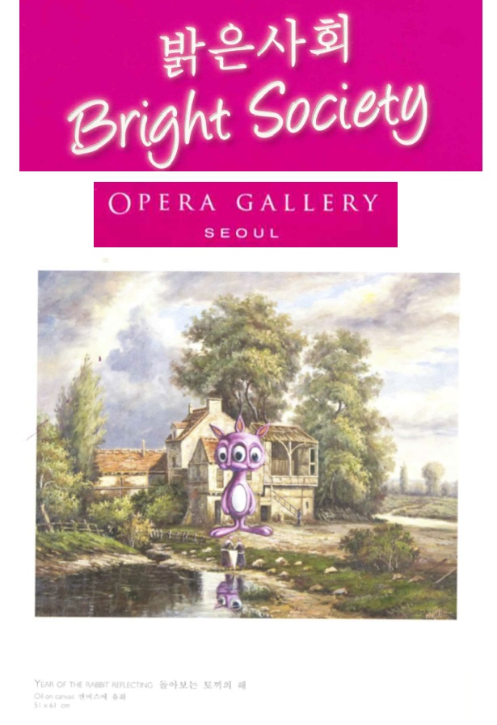

Exhibitions
Bright Society, Opera Gallery, Seoul, South Korea, October 12–31, 2009.
Notes
This work is documented in the exhibition catalogue for Bright Society, which also serves as evidence of its inclusion in the exhibition.
Ancillary Documentation
